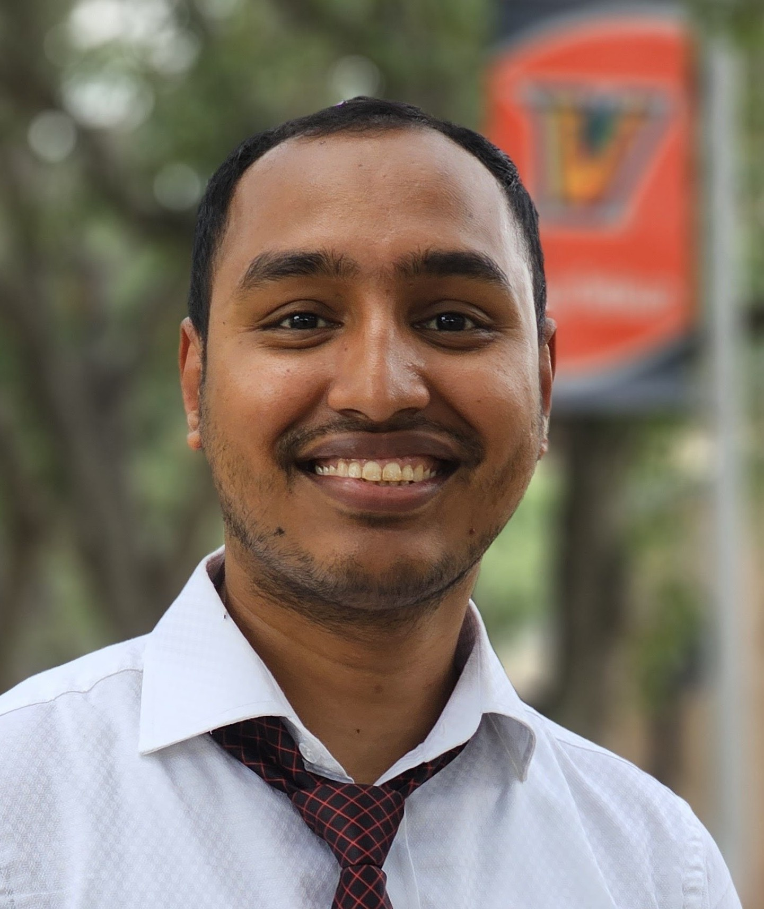

Dipok Deb
PhD Student, Big Data Analytics
University of Central Florida
About Me
I am a PhD student in Big Data Analytics at the University of Central Florida (UCF), where I work as a Research Assistant. My research applies machine learning and deep learning to problems in cybersecurity, such as detecting DDoS attacks and intrusions in IoT networks, and to healthcare data.
Before UCF, I earned an M.S. in Mathematics (Statistics) from the University of Texas Rio Grande Valley, and an M.S. and B.S. in Mathematics from Shahjalal University of Science & Technology (SUST), Bangladesh, where I also served as a Lecturer from 2018 to 2022.
Research Interests
News & Updates
- Aug 2026 Started as a Research Assistant at UCF.
- 2026 Serving as a reviewer for NeurIPS 2026.
- 2026 Received the VoloRidge Fellowship from SDMSS, UCF.
- Aug 2024 Started my PhD in Big Data Analytics at UCF.
- 2024 Paper presented at the 2024 IEEE World AI IoT Congress, Seattle.
Contact
dipok.deb@ucf.edu
University of Central Florida, Orlando, FL, USA